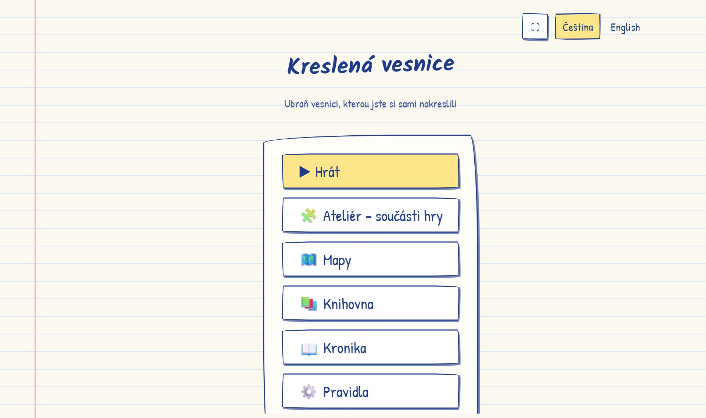
Dokumentace
Část 1 – Stručný průvodce · Část 2 – Úplná dokumentace
Hra: https://richardlipka.github.io/sketch-village/
Stav k 2. 11. 2026
Část 1 – Stručný průvodce
Část 2 – Úplná dokumentace
Kreslená vesnice je krátká strategická hra typu „obrana věžemi“ pro děti od 7 do 11 let. Hráč ovládá hrdinu, staví budovy kolem radnice a brání vesnici před vlnami nepřátel, kteří vylézají z jeskyní a jdou po cestách k radnici. Hra má 20 kol (vln); vyhraje, kdo všechna přežije.
Zvláštní na ní je, že všechno se dá nakreslit: hrdinové, nepřátelé, budovy, mince, šípy, jeskyně, ozdoby, povrchy i ikony. Děti kreslí na papír, vyfotí ho (nebo nahrají soubor, vloží obrázek ze schránky, případně nakreslí přímo ve hře) a hra obrázek použije. Dokud něco nakreslené není, hra kreslí jednoduchý tvar. Ke každé věci patří i její čísla (životy, útok, cena…), která děti mohou měnit.
| Tlačítko | K čemu je |
|---|---|
| Hrát | výběr mapy, hrdiny a obtížnosti, pak hra; pokračování v rozehrané hře |
| Ateliér – součásti hry | obrázky a čísla všech součástí: hrdinové, nepřátelé, budovy, zbraně, mince, jeskyně, ozdoby, povrchy, ikony… |
| Mapy | seznam map, kreslení map, rozmístění radnice, míst na stavbu a jeskyní, vlny |
| Kronika | příběhy a rady ke všem nepřátelům, sbírka potkaných příšer |
| Knihovna | hotové mapy ze stránek hry |
| Pravidla | čísla platná pro celou hru (mince, příprava, hrdina, odemykání…) |
| Uložit a nahrát | stažení všeho do souboru, nahrání souboru, balíček třídy, záloha, úklid |
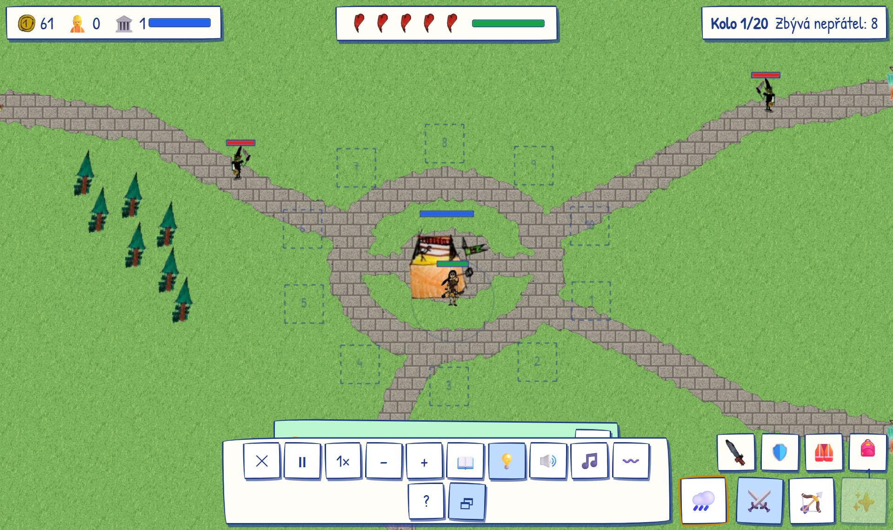
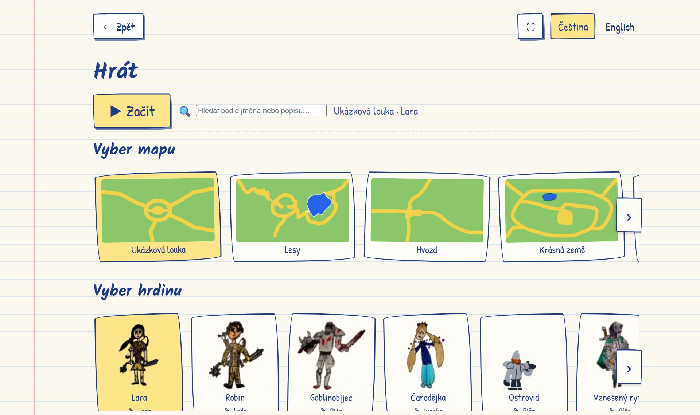
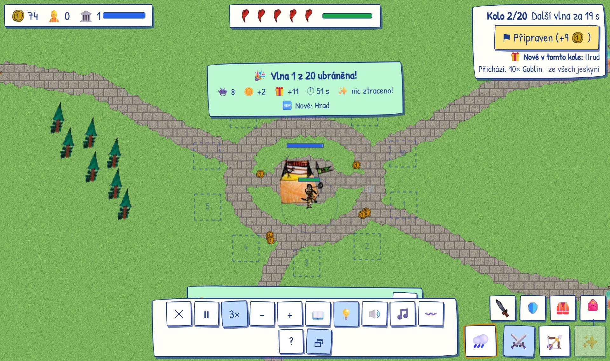
| Klávesa | Co dělá | Klávesa | Co dělá |
|---|---|---|---|
| šipky / WASD | chůze hrdiny | Mezerník | Připraven – vlna hned |
| 1 2 3 | útok zblízka / na dálku / kouzla | P | pauza |
| E | zvláštní schopnost | I | batoh |
| F | útok na nejbližšího nepřítele | B (Shift+B) | další (předchozí) místo na stavbu; Tab + Enter staví |
| Esc | zavře horní okno | ? | nápověda |
Tlačítka nástrojů dole: konec hry (zeptá se, nabídne Uložit a odejít), pauza, rychlost 1× / 2× / 3×, přiblížení − / +, kronika 📖, tipy 💡, zvuk, hudba 🎵, kreslené chvění 〰️, nápověda ?, celá obrazovka. Mapu lze posouvat tažením a přibližovat kolečkem nebo prsty.
Telefon se drží naležato: vlevo sloupec s pauzou, rychlostí a kronikou, vpravo útoky a vybavení; vše se ovládá ťuknutím.
Každá součást v Ateliéru má políčka na obrázky. Pod políčkem jsou tlačítka:
| Tlačítko | Co udělá |
|---|---|
| 📷 Vyfotit | zapne kameru (zadní i přední), vyfotí obrázek |
| 📁 Nahrát soubor | vybere obrázek z počítače nebo telefonu |
| 📋 Vložit ze schránky | vloží obrázek zkopírovaný jinde (snímek obrazovky, „Kopírovat obrázek“); jinak čeká na Ctrl+V |
| ✏️ Nakreslit / Upravit kreslením | kreslicí plocha: tužka, guma, tvary, kyblík, kouzelná hůlka, zrcadlení, zpět |
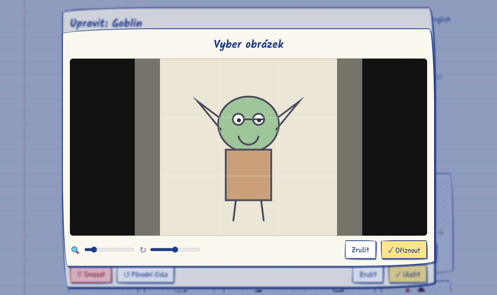
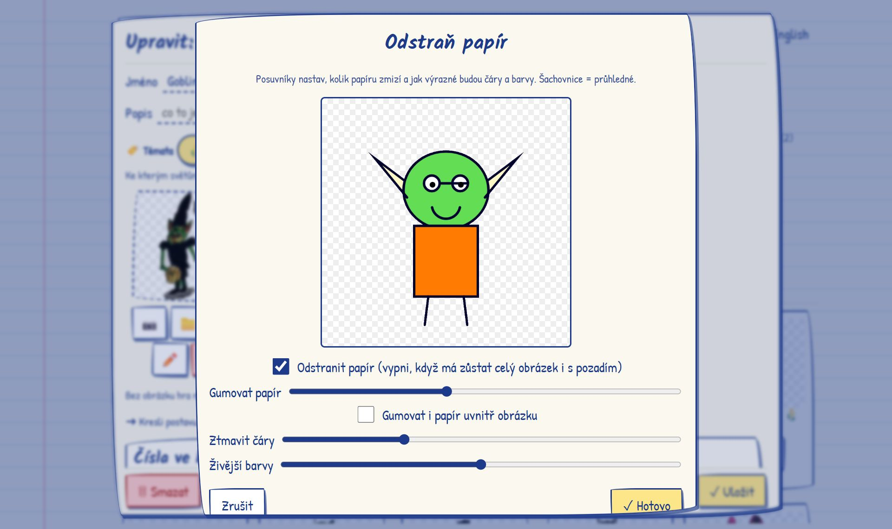
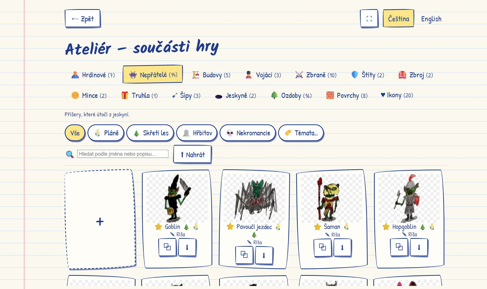
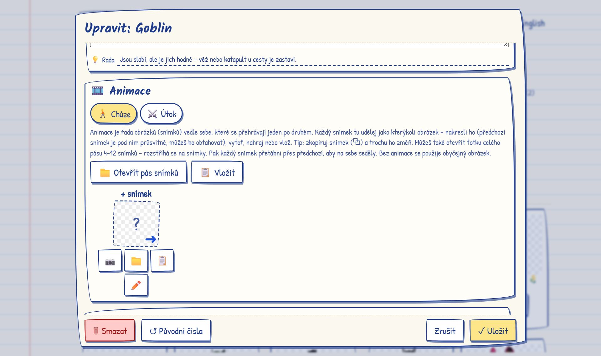
Budova je složená z vlastností („Co umí“) a z úrovní. Nový druh budovy tedy nepotřebuje žádné programování.
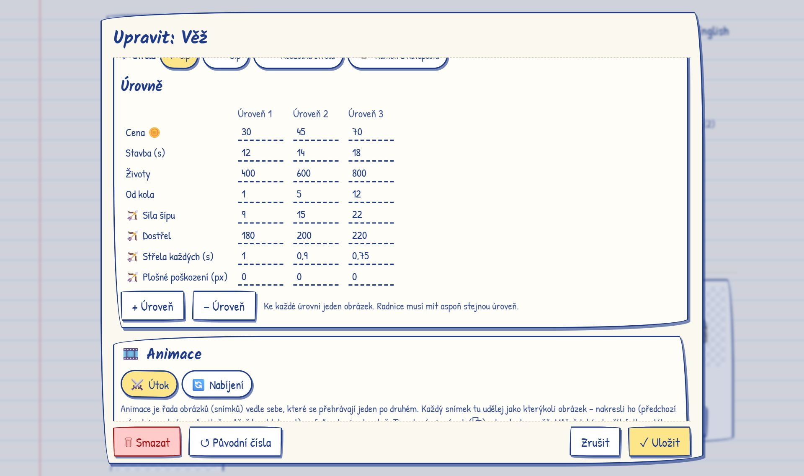
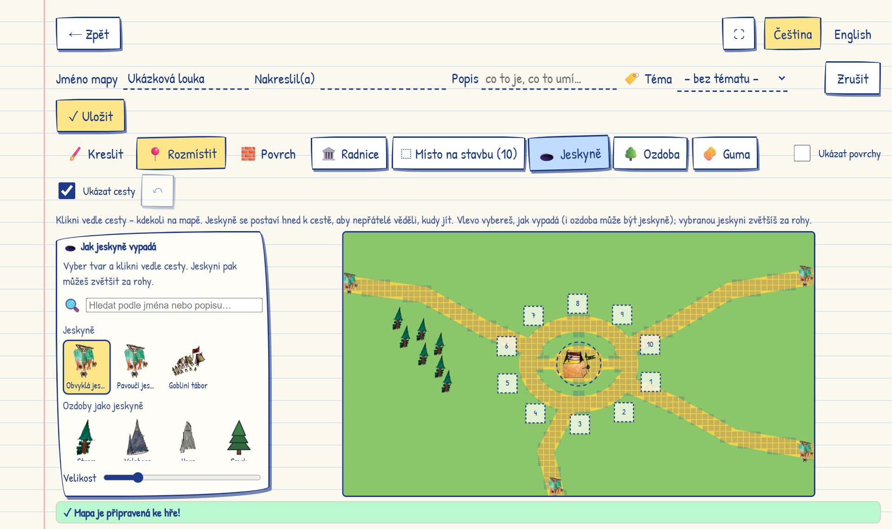
Všechno, co děti vytvoří, je jen v tomhle prohlížeči. Mezi počítači se to přenáší souborem (.json), ve kterém jsou i všechny obrázky.
| Co | Jak stáhnout | Jak nahrát jinde |
|---|---|---|
| Všechno (záloha) | Uložit a nahrát → Stáhnout soubor | Uložit a nahrát → Nahrát; změněné věci si prohlédneš a rozhodneš |
| Jedna mapa | Mapy → ⬇ u mapy: map-jméno.json s mapou a vším, co ke hře potřebuje | Mapy → ⬆ Nahrát mapu (nebo Nahrát v Ateliéru či v Uložit a nahrát) |
| Nepřítel, hrdina, budova, zbraň… | Ateliér → ⬇ na dlaždici součásti: enemy-jméno.json i s pomocníky, střelami, vojáky a dalšími vzhledy | Ateliér → ⬆ Nahrát |
| Mapa z Knihovny | – | Knihovna → Nahrát → Hrát tuto mapu; Odkaz zkopíruje odkaz, který otevře hru i s mapou |
https://… nebo jméno souboru z knihovny).default-data.json a nahradí jím soubor v repozitáři hry. Nový počítač s ním začne, ostatní stisknou Nahrát balíček třídy.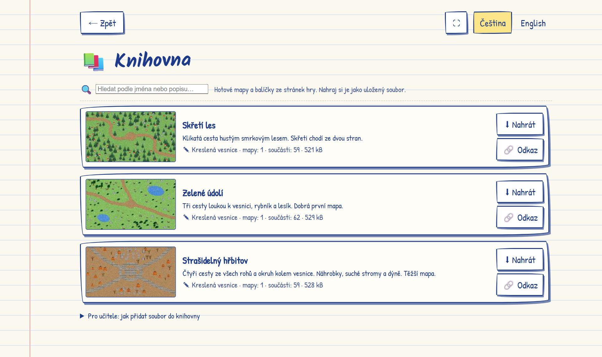
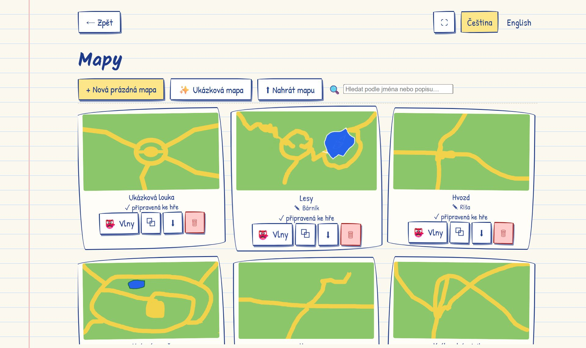
| Obrazovka | Obsah |
|---|---|
| Hrát | rozehraná hra (Pokračovat / Zahodit), mapy a hrdinové v řadě, kterou jde posouvat do stran, hledání, obtížnost, Začít |
| Hra | mapa, horní lišta (mince, dělníci, radnice, životy, kolo, odpočet, kdo přijde), nástroje, útoky, schopnost, vybavení, batoh, obchod, kronika, shrnutí vlny, konec hry |
| Ateliér | karty druhů součástí, hledání podle jména a popisu, filtr podle tématu, + Přidat, ⬆ Nahrát; editor součásti (obrázky + čísla) |
| Mapy | seznam map; editor mapy (Kreslit, Rozmístit, Povrch); editor vln (👺) se sílou vln, robotem a generováním vln |
| Kronika | 📖 Nepřátelé (obrázek, legenda, rada, schopnosti) a 🏅 Sbírka („Potkal(a) jsi 9 ze 14 nepřátel“) |
| Knihovna | hotové soubory ze stránek hry s náhledy; Nahrát, Hrát tuto mapu, Odkaz |
| Pravidla | čísla celé hry (kapitola 16) |
| Uložit a nahrát | stáhnout / nahrát soubor, balíček třídy, bezpečí dat a instalace, Zpět k výchozím součástkám hry, mazání dat |
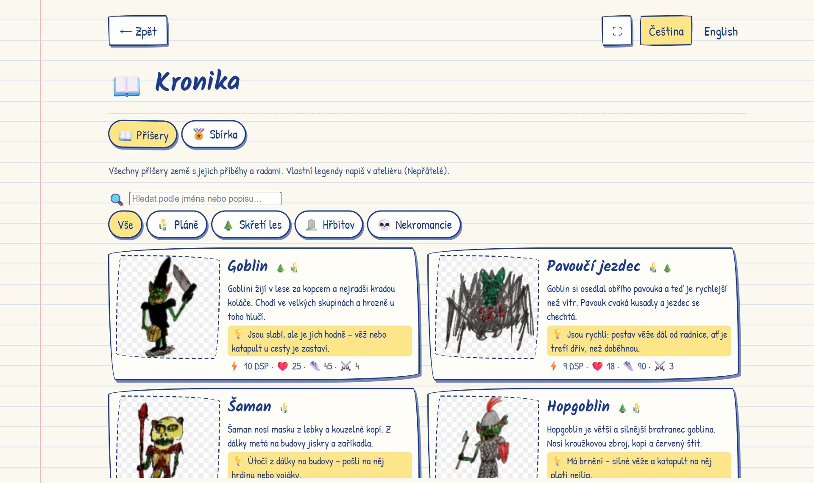
Hlavička každé obrazovky (název, tlačítka) zůstává na místě, posouvá se jen obsah. Všechny seznamy mají 🔍 hledání, které nehledí na velká písmena a háčky („skret“ najde Skřet).
Každá část hry je součást: záznam s obrázky a se všemi čísly. Vestavěné součásti (⭐ součást hry) jdou upravit a vrátit tlačítkem Původní čísla; děti je mohou kopírovat a přidávat vlastní.
| Druh (karta) | Velikost | Papír | Obrázky | Čísla a další |
|---|---|---|---|---|
| Hrdinové | 128 px | ano | hrdina + s mečem / lukem / kouzly | body vlastností, zvláštní schopnost, animace chůze a útoku |
| Nepřátelé | 128 px | ano | 1 | čísla, pomocníci, střela, legenda, zvuky, animace, témata |
| Budovy | 128 px | ano | 1 na úroveň | vlastnosti + úrovně, nebo jiný vzhled; animace útoku a nabíjení |
| Vojáci | 96 px | ano | 1 | animace; čísla dává hrad |
| Zbraně, Štíty, Zbroj | 96 px | ano | 1 | druh, ruce, útok / dosah / rychlost / plocha / brnění, cena, obchod, truhla |
| Mince | 64 px | ano | 1 | hodnota mince |
| Truhla | 64 px | ano | 1 | – |
| Šípy (střely) | 64 px | ano | 1 | vestavěné: šíp, kouzelná střela, kámen z katapultu |
| Jeskyně | 128 px | ano | 1 | tvar jeskyně v editoru mapy |
| Ozdoby | 128 px | ano | 1 | na mapu; mohou sloužit i jako jeskyně |
| Povrchy | 128 px | ne | 1 | skládají se do plochy; vestavěných 8 (tráva, louka, hliněná cesta, písek, kostky, skála, voda, sníh) |
| Ikony | 64 px | ano | 1 | pevná sada ikon ovládání (srdce, mince, útoky, batoh, 8 schopností…) |
Cesta obrázku: Vyfotit / Nahrát / Vložit / Nakreslit → Oříznout → Odstranit papír → (doladit kreslením) → Uložit.
Každý hrdina má 12 bodů, které rozdělí mezi 5 vlastností (nejvýš 5 do jedné). Všichni začínají ze stejného základu; čísla jdou změnit v Pravidlech.
| Vlastnost | Základ (0 bodů) | Za bod | 3 body | 5 bodů |
|---|---|---|---|---|
| ⚔️ Zblízka | útok 10, dosah 40, úder každých 0,8 s | +4 útok | 22 | 30 |
| 🏹 Na dálku | útok 5, dostřel 200, šíp každých 1,6 s | +2 útok, −0,1 s | 11 / 1,3 s | 15 / 1,1 s |
| 🛡️ Brnění | 0 % | +5 % | 15 % | 25 % |
| 👟 Rychlost | 90 px/s | +12 | 126 | 150 |
| ✨ Kouzla | útok 8, dosah 160, každých 1,8 s (jen s kouzelnou zbraní) | +3 útok | 17 | 23 |
Zbraň přidává svá čísla k útoku hrdiny daného druhu. Obouruční zbraň zabere i levou ruku (štít). Výměna zbraně trvá 2 s. Zbraně se kupují v obchodě na radnici nebo padají z truhel (2 % nepřátel, boss vždy; truhla zmizí po 60 s; když hrdina má vše, dá 15 mincí).
| Věc | Druh | Ruce | Útok | Dosah | Rychlost | Plocha | Brnění | Cena | Od kola |
|---|---|---|---|---|---|---|---|---|---|
| Dřevěný meč (start) | zblízka | 1 | 0 | 0 | 0 | – | – | – | – |
| Krátký luk (start) | na dálku | 2 | 0 | 0 | 0 | – | – | – | – |
| Meč | zblízka | 1 | +6 | 0 | 0 | – | – | 25 | 1 |
| Obouruční sekera | zblízka | 2 | +16 | +5 | +0,25 s | – | – | 60 | 6 |
| Dlouhý luk | na dálku | 2 | +2 | +60 | 0 | – | – | 30 | 3 |
| Kuše | na dálku | 2 | +8 | +20 | +0,3 s | – | – | 55 | 8 |
| Kouzelná hůlka | kouzla | 1 | 0 | 0 | 0 | 50 | – | 45 | 5 |
| Ohnivá hůl | kouzla | 2 | +8 | +20 | −0,2 s | 75 | – | 90 | 12 |
| Dřevěný štít | štít | – | 8 % | 20 | 2 | ||||
| Železný štít | štít | – | 15 % | 50 | 7 | ||||
| Kožená zbroj | zbroj | – | 8 % | 25 | 4 | ||||
| Kroužková zbroj | zbroj | – | 15 % | 60 | 10 | ||||
„Rychlost“ = o kolik sekund se prodlouží (+) nebo zkrátí (−) čas mezi útoky. „Plocha“ = poloměr zásahu kouzla v px – zasáhne všechny nepřátele v okolí cíle, i létající.
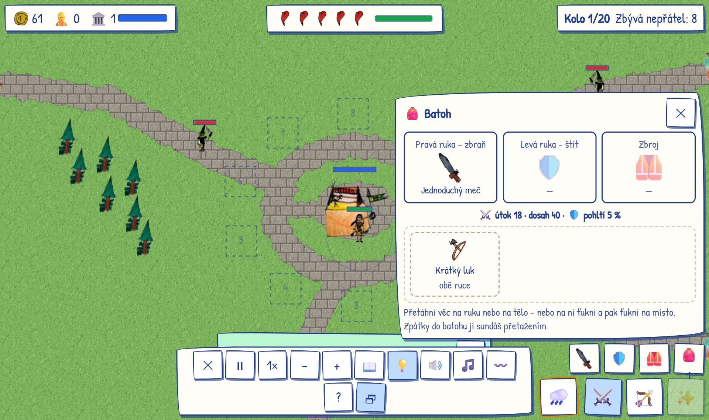
Každý hrdina má jednu schopnost (vybírá se v editoru hrdiny i s čísly). Použije se kulatým tlačítkem nebo E, pak se dobíjí. Když na tlačítko ukážeš, mapa ukáže dosah a koho schopnost zasáhne nebo komu pomůže.
| Schopnost | Co dělá | Síla | Dosah | Trvá | Dobíjení |
|---|---|---|---|---|---|
| 💥 Mocný úder | jeden obrovský úder do nejsilnějšího nepřítele u hrdiny | 120 zranění | 70 | – | 20 s |
| 📣 Bojový pokřik | nepřátelé kolem chodí a útočí pomaleji | o 50 % | 160 | 5 s | 25 s |
| 🛡️ Posily | přijdou vojáci a bojují s hrdinou | 3 vojáci (70 životů, útok 9) | – | 15 s | 40 s |
| 💚 Léčení | vyléčí hrdinu, budovy a vojáky kolem | 60 životů | 150 | – | 30 s |
| 🌧️ Déšť šípů | míří se na místo na mapě (nejvýš 320 px daleko); zasáhne všechny, i létající | 40 zranění | 130 | – | 25 s |
| ❄️ Mráz | nepřátelé kolem zamrznou (nechodí, neútočí, nesvolávají) | – | 120 | 3 s | 35 s |
| 🔰 Štít | hrdinu nic nezraní | – | – | 5 s | 30 s |
| 🎺 Povzbuzení | budovy kolem pracují rychleji (střely, vojáci, léčení) | +60 % | 220 | 8 s | 35 s |
Meze v editoru: síla 0,1–500, dosah 0–400 px, kam lze poslat 60–800 px, trvání 0–30 s, dobíjení 3–120 s (zpomalení nejvýš 90 %, povzbuzení nejvýš +300 %). Vylepšení v obchodě (3 úrovně, ceny 15 / 30 / 50): každá úroveň síla +25 %, trvání +15 %, dobíjení −10 %.
| Vlastnost | Čísla v úrovni | Co dělá |
|---|---|---|
| 👷 Dělníci | Dělníci | zrychlují každou stavbu a vylepšení |
| 🏹 Střílí šípy | Síla šípu, Dostřel, Střela každých, Plošné poškození | střílí na nepřítele v dosahu nejblíž radnici; zasáhne i létající |
| 🪨 Hází kameny | síla, dostřel, každých, plocha | kámen na největší skupinu pěších nepřátel; zraní všechny v místě dopadu (ne létající, ne blíž než 50 px) |
| 🛡️ Vojáci | Vojáků, Životy vojáka, Útok vojáka, Úder každých, Nový voják za, Hlídka | vojáci hlídkují po cestě kolem budovy (nejdál „Hlídka“ px), bojují s pěšími nepřáteli a vracejí se |
| 🪙 Vydělává mince | Mince za kolo | po každém přežitém kole přidá mince |
| ❤️ Léčí hrdinu | Léčení za s, Dosah léčení | léčí hrdinu, který stojí blízko |
Každá úroveň má navíc Cena, Stavba (s), Životy a Od kola. Budova bez obrázku se kreslí tvarem podle své hlavní vlastnosti.
| Budova | Úr. | Cena | Stavba | Životy | Od kola | Hlavní čísla |
|---|---|---|---|---|---|---|
| Radnice (stojí od začátku; šípy + léčí hrdinu 8/s do 80 px) | 1 | – | – | 480 | 1 | šíp 5, dostřel 170, každých 1,2 s |
| 2 | 60 | 20 | 720 | 3 | šíp 8, dostřel 190, 1,1 s | |
| 3 | 100 | 30 | 960 | 11 | šíp 12, dostřel 210, 1,0 s | |
| Dům (dělníci) | 1 | 20 | 10 | 320 | 1 | 1 dělník |
| 2 | 30 | 12 | 480 | 7 | 2 dělníci | |
| 3 | 45 | 15 | 640 | 14 | 3 dělníci | |
| Věž (šípy) | 1 | 30 | 12 | 400 | 1 | šíp 9, dostřel 180, 1,0 s (9 za s) |
| 2 | 45 | 14 | 600 | 5 | šíp 15, dostřel 200, 0,9 s (17 za s) | |
| 3 | 70 | 18 | 800 | 12 | šíp 22, dostřel 220, 0,75 s (29 za s) | |
| Hrad (3 vojáci) | 1 | 40 | 15 | 600 | 2 | voják 30 životů, útok 6/1 s, nový za 12 s, hlídka 160 |
| 2 | 60 | 18 | 880 | 9 | 45 životů, útok 9, nový za 10 s, hlídka 180 | |
| 3 | 90 | 22 | 1200 | 16 | 60 životů, útok 12, nový za 8 s, hlídka 200 | |
| Katapult (kameny) | 1 | 45 | 16 | 440 | 6 | kámen 14, dostřel 230, 3,2 s, plocha 45 |
| 2 | 65 | 18 | 640 | 10 | 22, 250, 3,0 s, plocha 50 | |
| 3 | 95 | 22 | 880 | 15 | 32, 270, 2,8 s, plocha 55 |
| Číslo | Význam |
|---|---|
| Životy | kolik zranění vydrží (ve hře ještě × růst životů za kolo a × obtížnost) |
| Rychlost | px za sekundu |
| Útok, Útok každých (s) | zranění jednoho úderu / výstřelu a čas mezi nimi |
| Dosah | na jakou vzdálenost útočí (zblízka ~25, střelci 120–150) |
| Brnění % | o kolik procent menší zranění dostane: max(1, zaokr(zranění × (1 − brnění))) |
| Mince | kolik mincí po něm zůstane (od–do) |
| Plošné poškození (px) | jeho zásah zraní i všechny obránce v tomto okruhu |
| létá / střílí / boss | létá rovnou k radnici přes všechno, zblízka nejde zasáhnout; střílí zdálky vybranou střelou; boss je větší a vždy nechá truhlu |
| Velikost | jak velký je ve hře (1 = běžný) |
| Svolává pomocníky | které nepřátele, kolik najednou, každých (s), nejvíc naživu, další, když zemře; pomocníci sami nesvolávají |
Nepřátelé vylézají jen z jeskyní, jdou po cestách k radnici a útočí na nejbližší věc v dosahu (budovy, vojáky, hrdinu); když ji zničí, jdou dál.
| Nepřítel | Druh | Životy | Rychl. | Útok | Každých | Dosah | Brnění | Mince | DSP |
|---|---|---|---|---|---|---|---|---|---|
| Goblin | zblízka | 25 | 45 | 4 | 1,0 | 25 | 0 % | 1–2 | 10 |
| Smečka goblinů | zblízka | 25 | 45 | 4 | 1,0 | 25 | 0 % | 1–2 | 10 |
| Pavoučí jezdec | zblízka, rychlý | 18 | 90 | 3 | 0,7 | 25 | 0 % | 1–2 | 9 |
| Šaman | střílí | 20 | 40 | 5 | 1,5 | 150 | 0 % | 2 | 11 |
| Hopgoblin | zblízka | 90 | 30 | 10 | 1,4 | 30 | 15 % | 3–5 | 31 |
| Netopýr | létá | 15 | 55 | 3 | 1,0 | 25 | 0 % | 1–2 | 9 |
| Rukh | létá | 150 | 90 | 10 | 1,0 | 25 | 15 % | 3–6 | 71 |
| Troll | boss | 400 | 22 | 25 | 2,0 | 40 | 25 % | 20 | 113 |
| Kostlivec | zblízka | 18 | 42 | 4 | 1,1 | 25 | 0 % | 1 | 8 |
| Kostlivý bojovník | zblízka | 18 | 42 | 4 | 1,1 | 25 | 0 % | 1 | 8 |
| Nekromant | střílí; svolává kostlivce a bojovníky (2 / 8 s, nejvýš 6) | 90 | 26 | 7 | 1,8 | 140 | 10 % | 6–8 | 94 |
| Pavoučátko | zblízka | 8 | 70 | 2 | 0,8 | 22 | 0 % | 0–1 | 4 |
| Pavoučice | svolává pavoučátka (3 / 9 s, nejvýš 6, +4 při smrti) | 130 | 32 | 9 | 1,2 | 28 | 10 % | 5–7 | 92 |
| Král goblinů | boss, střílí; svolává goblina, hopgoblina, šamana (1 / 10 s, nejvýš 3) | 300 | 32 | 20 | 2,0 | 120 | 20 % | 20 | 154 |
Každá mapa má svůj plán vln (Mapy → 👺 Vlny). Nahoře: Mince na začátku, První příprava (s), Příprava (s) a Každé kolo silnější o __ %. Plán má libovolný počet kol (výchozí 20); kola jde přidávat, kopírovat (⧉) a mazat.
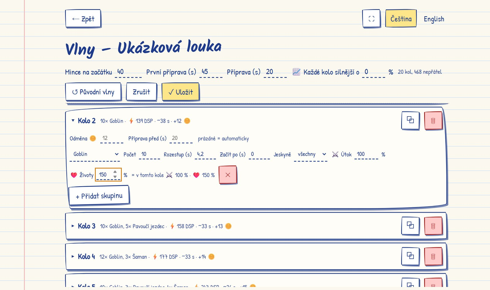
| Pole | Význam |
|---|---|
| Odměna 🪙, Příprava před (s) | odměna za kolo a čas přípravy před ním; prázdné = automaticky |
| Nepřítel | kdo ve skupině přijde (nepřátelé tématu mapy jsou nahoře) |
| Počet | kolik jich přijde |
| Rozestup (s) | čas mezi dvěma nepřáteli skupiny |
| Začít po (s) | za kolik sekund od začátku vlny skupina začne |
| Jeskyně | z které jeskyně; „všechny“ = střídají se po řadě (každá skupina začne jinou jeskyní) |
| ⚔️ Útok %, ❤️ Životy % | síla nepřátel skupiny proti tomu, jak jsou nakreslení (kapitola 11) |
V záhlaví kola je shrnutí: kdo přijde, síla kola v DSP, přibližná délka, odměna a 📈 o kolik je kolo silnější díky růstu.
Vlny trvají 40–60 s, mezi nimi 20 s přípravy (první 45 s). Pomalí nepřátelé (hopgoblini, bossové) chodí na začátku vlny. Po každé vlně se odemkne něco nového:
| Kolo | Nové | Kolo | Nové |
|---|---|---|---|
| 1 | dům, věž | 11 | radnice 3 |
| 2 | hrad | 12 | věž 3 |
| 3 | radnice 2 | 13 | luk +2 |
| 4 | luk +1 | 14 | dům 3 |
| 5 | věž 2 | 15 | meč +2, katapult 3 |
| 6 | meč +1, katapult | 16 | hrad 3, kouzla +2 |
| 7 | dům 2 | 17 | brnění +2 |
| 8 | brnění +1 | 18 | rychlost +2 |
| 9 | hrad 2, kouzla +1 | 19 | luk +3, meč +3 |
| 10 | rychlost +1, katapult 2 | 20 | brnění +3, rychlost +3, kouzla +3 |
Každá skupina má ⚔️ Útok a ❤️ Životy v procentech toho, jak je nepřítel nakreslený (100 = beze změny, 200 = dvojnásobek; povoleno 10–1000 %). Celý plán má 📈 Každé kolo silnější o r % (0–50 %): první kolo je beze změny, druhé +r %, třetí +2r %… Všechna procenta se počítají proti stejnému základu, proto se sčítají:
| Nastavení | Lehká | Normální | Těžká |
|---|---|---|---|
| růst 0 % | vyhrál 5/5, nic neztratil | vyhrál 5/5 (4,4 budovy za hru) | vyhrál 4/5 |
| růst 1 % | 5/5 | 5/5 (7,4 budovy) | padne v kole 17–19 |
| růst 2 % | 5/5 | vyhrál 1/5 | padne v kole 16–17 |
| růst 3 % | 5/5 | padne v kole 17–19 | padne v kole 15 |
| růst 5 % | 5/5 | padne v kole 15–16 | padne v kole 12–13 |
| růst 10 % | padne v kole 15–16 | padne v kole 11–12 | padne v kole 7–8 |
| všechny skupiny 120 % | 5/5 | 5/5 | padne v kole 16–17 |
| všechny skupiny 150 % | 5/5 | padne v kole 15–17 | padne v kole 7–8 |
| všechny skupiny 200 % | padne v kole 17–20 | padne v kole 6–7 | padne v kole 5 |
DSP je jedno číslo, které říká, jak těžké je nepřítele zastavit. Goblin má 10. Podle DSP se porovnávají vlny, generují nové a celý plán se zesiluje nebo zeslabuje. Ukazuje se v editoru nepřítele (Síla (DSP): sám + pomocníci), v kronice, v záhlaví kola a v tabulce Síla vln.
Kdo svolává pomocníky, k tomu přičte DSP všech, které za život svolá:
Konstanty naměřil robot: na začátku 6. a 12. kola výchozí hry přišlo N kopií jednoho nepřítele a N se zvětšovalo, dokud robot opakovaně neprohrál. Nepřítel, který robota zlomí s třetinovým počtem, má cenu 3 goblinů. Změřeno pro všechny vestavěné nepřátele a sedm upravených goblinů; DSP ÷ 10 se od naměřené ceny liší nejvýš o 11 % (v průměru 5 %).
| Schopnost (u goblina) | Cena (goblinů) | Konstanta |
|---|---|---|
| střílí na 150 px | 1,40 | střelba +0,4 na 150 px (nejvýš +0,8) |
| létá | 1,30 | × 1,3 |
| plošné poškození 80 px | 1,26 | +0,35 % za px (nejvýš +60 %) |
| dvakrát rychlejší | 1,11 | rychlost^0,1 |
| 4× víc životů | 2,50 | odolnost^0,7 |
| 3× větší útok za sekundu | 1,38 | váha útoku 0,2 |
| svolá 2 gobliny každých 8 s | 2,97 | každý svolaný pomocník se počítá celý |
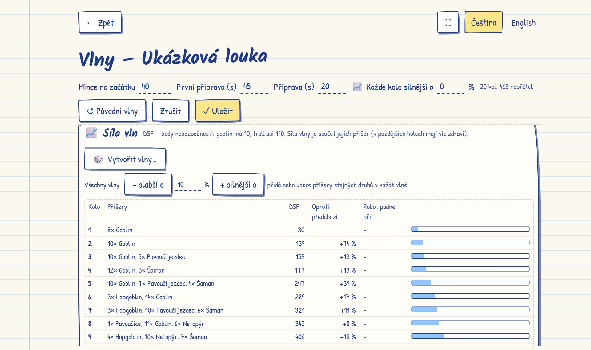
Po každé vlně se nahoře na 9 s (nebo do ťuknutí) ukáže: 👾 poražení nepřátelé, 🪙 sebrané mince, 🎁 odměna (+ mince z budov), ⏱ jak dlouho vlna trvala, ztracené budovy a životy, nebo „nic ztraceno!“, a co je nové v příštím kole.
V editoru vln. Robot (opatrný hráč: staví podle pořadí na nejbližší místa k radnici, sbírá mince, loví nepřátele u budov, chodí se léčit) zahraje tuto mapu s těmito vlnami třikrát na vybranou obtížnost (asi 3 s). Robot nepoužívá zvláštní schopnosti, aby síla vln byla měřená bez nich.
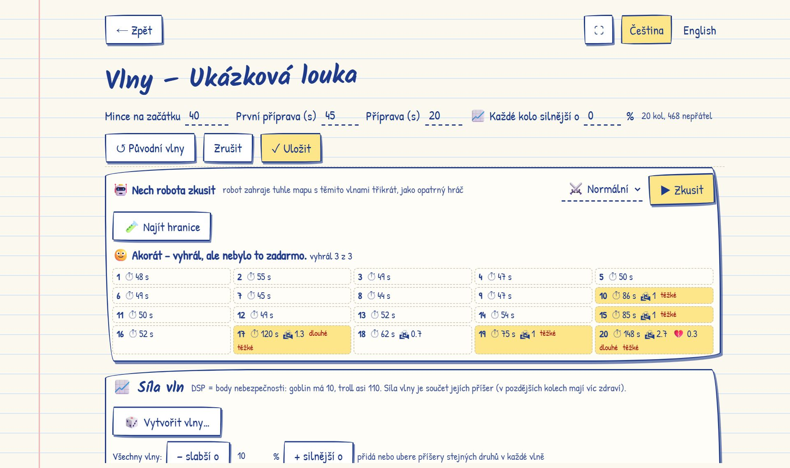
| Verdikt | Kdy |
|---|---|
| 😵 Moc těžké | robot ani jednou nevyhrál |
| 😬 Těžké | vyhrál jen někdy |
| 🙂 Akorát | vyhrál, ale něco ztratil |
| 😴 Možná moc lehké | vyhrál pokaždé a nic neztratil |
U každého kola: průměrná délka vlny (⏱), ztracené budovy (🏚) a životy (💔) a značky krátké (pod 20 s), dlouhé (nad 90 s), těžké (v průměru aspoň 1 budova nebo život).
Robot zahraje mapu jednou pro každé ze tří semínek náhody a na začátku každého kola si uloží kopii hry. Z kopie hraje to kolo znovu se silnější vlnou (×1,25, ×1,5, ×2, ×3, ×4, ×6, ×8 – víc nepřátel stejných druhů), dokud neprohraje aspoň 2 ze 3 her, a pak mezeru půlí na 10 %. Kolo, které neudrží ani tak, jak je, zkouší slabší (×0,8 … ×0,25). V tabulce Síla vln pak u kola stojí padne při ×2,4 (612 DSP), vydrží i ×8, padne už teď (vydrží ×0,6), nebo robot sem nedošel. Červené řádky padají už teď, žluté mají méně než ×1,25 rezervy. Trvá asi 25 s pro 20 vln.
Výchozí plán je každé kolo silnější (80 → 1371 DSP) a rezerva robota se rovnoměrně zužuje z ×4,7 v 1. kole na ×1,7 ve 20. kole. Lehkou robot vyhraje bez ztráty budovy, normální pokaždé, těžkou ve 4 z 5 her.
| Životy nepřátel | Rychlost | Útok | Mince na začátku | Životy hrdiny navíc | |
|---|---|---|---|---|---|
| 🐣 Lehká | 70 % | 85 % | 70 % | 125 % | +2 |
| ⚔️ Normální | 100 % | 100 % | 100 % | 100 % | 0 |
| 🔥 Těžká | 130 % | 112 % | 100 % | 85 % | 0 |
Obtížnost se vybírá na obrazovce Hrát a pamatuje se. Čísla součástí zůstávají, hra je jen při hře násobí.
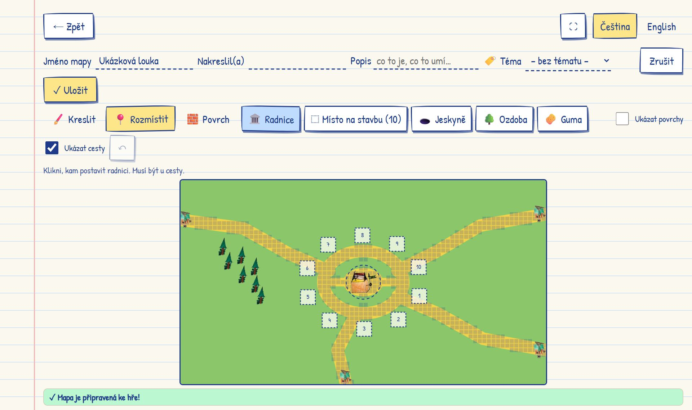
Obrazovka Pravidla mění čísla, která nepatří jedné součásti (ta jsou v Ateliéru). Ukládají se se vším ostatním.
| Pravidlo | Výchozí | Pravidlo | Výchozí |
|---|---|---|---|
| mince na začátku | 40 | dosah sebrání mince | 24 px |
| první příprava / příprava | 45 s / 20 s | mince zmizí po | 30 s (bliká 5 s) |
| odměna za kolo | 10 + kolo | bonus za Připraven | 0,5 mince / s |
| růst životů nepřátel | +5 % za kolo | životy hrdiny | 5 |
| návrat hrdiny | 10 s | nezranitelnost po ztrátě života | 1,5 s |
| výměna zbraně | 2 s | truhla | 2 %, 60 s, 15 mincí |
| dosah stavění | 90 px | zrychlení za dělníka | 0,15 |
| oprava budov | 1 %/s po 5 s | prodej | 70 % |
| vojáci: rychlost / dosah / hlídání | 80 / 30 / 160 px | vylepšení hrdiny | 15 / 30 / 50 mincí |
Dále tabulka hrdiny (kapitola 4) a Co se kdy odemkne (vylepšení hrdiny podle kol). Kdy jdou stavět úrovně budov, je u každé úrovně v Ateliéru („Od kola“). Tlačítko Výchozí pravidla vrátí vše.
…/sketch-village/?data=goblin-forest otevře hru s nahraným souborem (soubor z jiné stránky se nejdřív zeptá).public/default-data.json): nový počítač s ním začne; Nahrát balíček třídy ho přidá kdykoli (nic nesmaže).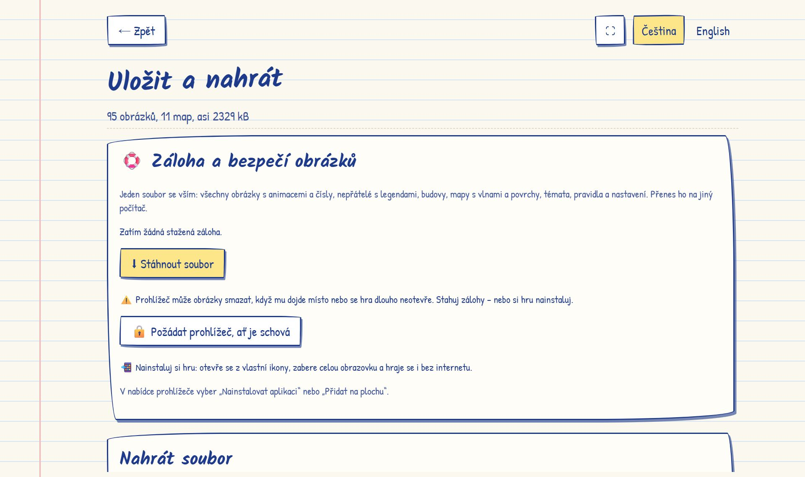